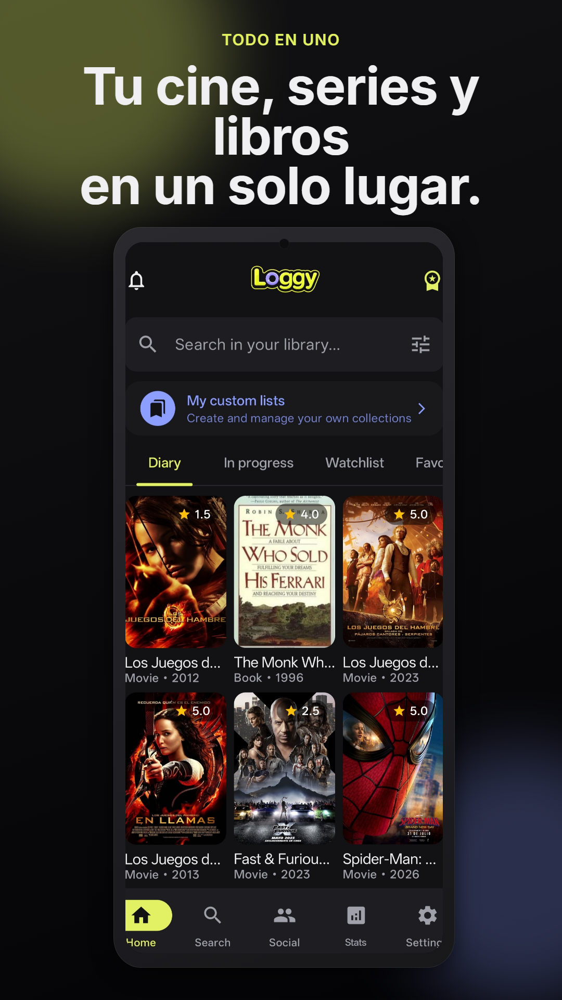

Deja de usar tres apps distintas.
Películas, series y libros
en una sola app.
Letterboxd, TV Time y Goodreads unificados en una sola experiencia fluida. Registra lo que ves y lees con media estrella, decide qué ver con amigos en 30 segundos con la ruleta y escanea libros al instante.

Herramientas que no encontrarás en ningún otro sitio
Cada rincón de Loggy está construido con Compose Multiplatform nativo para darte una velocidad inigualable.
«¿Qué vemos hoy?» + Ruleta de 30 segundos
Añade a tu pareja o amigos. Loggy cruza automáticamente vuestras listas de pendientes para mostrar qué tenéis en común y os ayuda a decidir en menos de 30 segundos con la ruleta interactiva. ¡Adiós a 45 minutos buscando en Netflix!
Spoiler Shield inteligente
Protección activa para tu feed social y comunitario. Cualquier reseña con destripes clave se detecta y desenfoca automáticamente para que nadie te arruine el final.
«¡El giro del minuto 42 cuando descubren quién era el espía es absolutamente brillante! Nunca lo vi venir.»
Escáner de libros por cámara (ISBN)
¿Estás en una librería o biblioteca? Apunta con la cámara al código de barras del libro para agregarlo inmediatamente a tus pendientes, consultar notas y ver qué opinan tus amigos.
Dónde ver en streaming en tu país
Consulta de un vistazo si una película o serie está disponible en Netflix, Prime Video, Max, Disney+, Filmin o Apple TV antes de perder el tiempo buscando en cada plataforma.
Retos anuales y estadísticas PRO
Fija tus metas anuales de libros leídos, horas de cine y temporadas completadas. Disfruta de gráficos de calificaciones con medias estrellas y desglose por directores y autores.
100% Offline first y sincronización
Base de datos local ultrarrápida. Valora o anota lecturas en un vuelo o en el metro sin cobertura; todo se sincronizará automáticamente con la nube en cuanto recuperes conexión.
Tu entretenimiento no debería estar dividido en tres apps
Mantener listas separadas en tres plataformas lentas es cosa del pasado. Descubre la diferencia de tener toda tu vida cultural en un solo lugar.
- ✕ Tener tres aplicaciones distintas ocupando espacio en tu teléfono.
- ✕ Perder 40 minutos cada noche discutiendo qué película ver en streaming.
- ✕ Destripes en redes sociales que arruinan el final de tu serie favorita.
- ✕ Teclear títulos de libros y autores a mano cada vez que compras uno.
- ✕ Publicidad invasiva y pérdida de datos si no tienes cobertura.
- ✓ Un solo perfil impecable para todas tus películas, series y libros.
- ✓ La ruleta de 30 segundos: cruza listas con amigos y decidid al instante.
- ✓ Spoiler Shield activo: reseñas con destripes desenfocadas automáticamente.
- ✓ Escáner por cámara: apunta al código de barras del libro y listo.
- ✓ 100% Offline first con base de datos nativa de alto rendimiento.
Así se ve la experiencia Loggy en tu mano
Explora las 8 pantallas principales diseñadas al milímetro para una experiencia visual exquisita.
Amada por más de 1.000 cinéfilos y lectores
Descubre cómo Loggy ha transformado la manera de registrar y compartir la cultura para cientos de apasionados.
«Loggy ha sustituido por completo a Letterboxd y TV Time en mi teléfono. La ruleta de 30 segundos nos salvó las noches de cine con mi pareja.»
«Poder escanear códigos de barras de libros en la librería con la cámara y tener mis lecturas junto a mis películas favoritas es una maravilla.»
«El filtro contra spoilers es una genialidad. Por fin puedo leer reseñas de la comunidad sin miedo a que me destripen el final de temporada.»
«Las calificaciones con media estrella y las estadísticas anuales desglosadas por director y autor son justo lo que echaba en falta en otras apps.»
«Saber exactamente en qué plataforma de streaming está disponible cada película antes de buscar ahorra un tiempo infinito cada fin de semana.»
«Viajo mucho y poder registrar mis lecturas y películas en el avión 100% offline sin perder nada es clave. Al aterrizar se sincroniza al instante.»
«Los retos anuales unificados de libros, películas y series te motivan muchísimo. Ver el progreso en los tres círculos da una satisfacción enorme.»
«La app es rapidísima y la interfaz limpia y oscura no te satura con publicidad invasiva. Una delicia técnica y visual hecha con Compose.»
Preguntas frecuentes
¿Loggy es completamente gratuita?
¿Cómo funciona la ruleta de 30 segundos con amigos?
¿Qué es el Spoiler Shield y cómo protege mis series y libros?
¿Puedo ver dónde ver una película o serie en streaming según mi país?
¿Funciona sin conexión a internet (modo offline)?
Transforma tu forma de disfrutar del cine, las series y los libros
Descarga Loggy gratis en tu teléfono y únete a la comunidad cultural más apasionada.